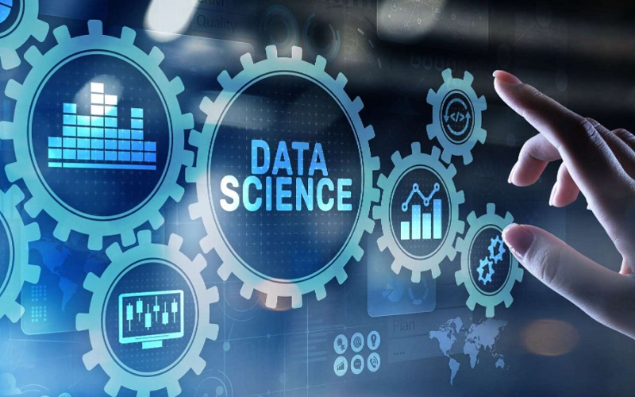
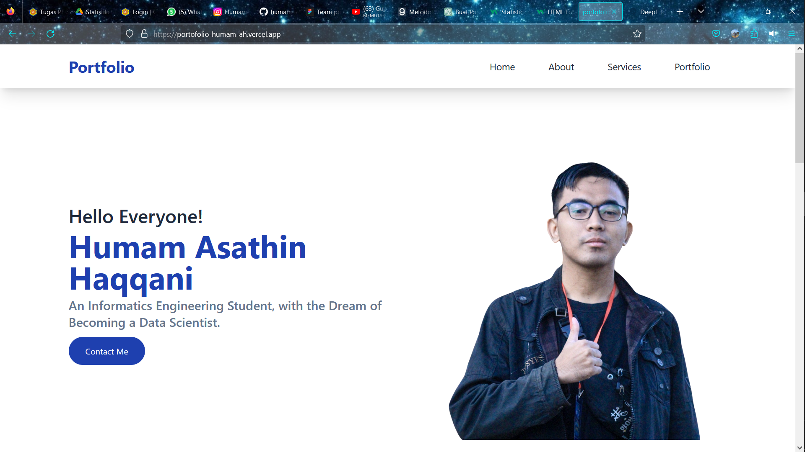

Tentang Saya
Saya seorang Data Scientist
Saya adalah seorang Mahasiswa Sarjana Terapan Teknik Informatika. Saya memiliki cita-cita untuk menjadi seorang Data Scientist. Kemampuan saya ada pada Logika, Matematika, Kepemimpinan, & Pemrograman Dasar.
Pengalaman Saya
-
Ketua Panitia Pelantikan Pimpinan Cabang Ikatan Mahasiswa Muhammadiyah Tegal
4 Oktober 2023 - 14 Oktober 2023
Saya diamanahi untuk menjadi Ketua Panitia Pelantikan PC IMM Tegal sekaligus Stadium General bertemakan "Regenerasi Kepemimpinan Melalui Gerakan Anti Kekerasan Anak, Menuju Gerakan Profetik". Acara ini dilaksanakan pada hari Sabtu, 14 Oktober 2023, bertempat di Pendopo Amangkurat Kabupaten Tegal.
-
Sekretaris Majelis Perwakilan Kelas (MPK) SMKN 1 Adiwerna
Oktober 2020 - Desember 2021
Menjadi Sekretaris di Majelis Perwakilan Kelas SMKN 1 Adiwerna/STM ADB, periode 2020/2021. Masa jabatan lebih lama dari biasanya karena saat itu masa pandemi covid, jadi pergantian kepengurusan sempat diundur.
-
Ikatan Pelajar Muhammadiyah (IPM) Ranting Tembok Lor
- 2021 - 2022 (Ketua Bidang Pengkajian Ilmu Pengetahuan)
- 2019 - 2021 (Sekretaris Umum)
- 2017 - 2019 (Bidang Humas)
Menjadi Anggota IPM Ranting Tembok Lor sejak tahun 2015. Lalu mulai masuk Kepemimpinan di tahun 2017 sebagai Anggota Bidang Humas, di periode kedua dilakukan Reshuffle dan Saya Menjadi Sekretaris Umum mulai tahun 2019 sampai 2021. Pada Kepemimpinan selanjutnya, struktural dipegang oleh generasi setelah Saya, jadi disini saya menjadi Ketua Bidang PIP hanya sebagai pendamping untuk Kepemimpinan baru.
Proyek
-
Alat Pengukur Tinggi Badan
(on proses) Aplikasi Pengukur Tinggi Badan menggunakan Arduino dan Sensor Ultrasonik HC-SR04, dengan interface dari Java.
-
Website Portofolio
Website Portofolio Pribadi menggunakan HTML, CSS, JavaScript, dan Framework Tailwind. Dihosting menggunakan Vercel app.